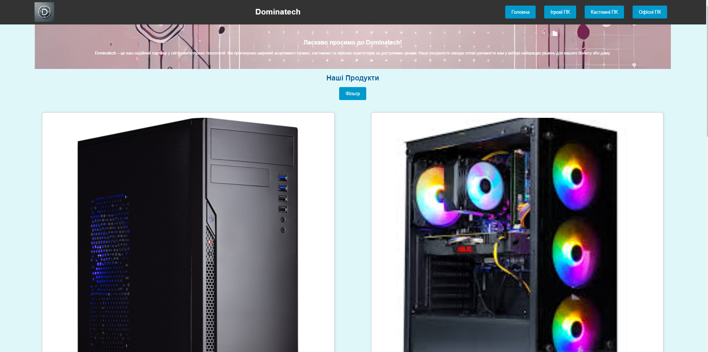
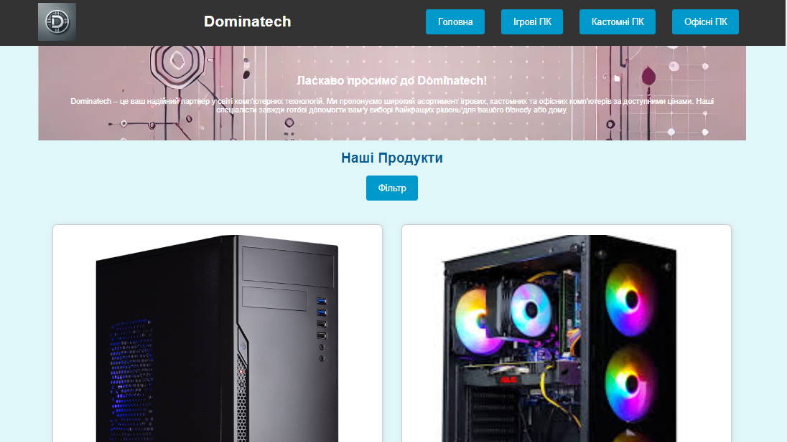
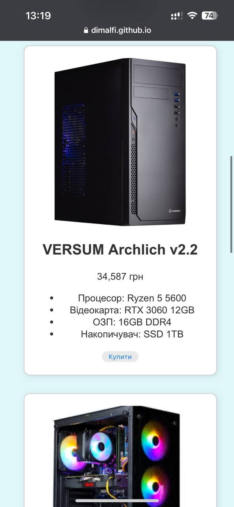

Десктопна версія
Планшетна версія
Мобільна версія
Пояснення створення десктопної, планшетної та мобільної версії
Для реалізації такого підходу були використані медіа-запити, з відповідними брейкпоінтами для оптимального розміщення елементів на сторінці. Для цього були використані відповідні CSS стилі, які додаються, або перекривають існуючі. Так наприклад було створено головне меню, в якому кнопки вистроюються у колонку в мобільній версії, або в 2 чи 1 рядки на планшетах та десктопах відповідно. Подібним чином були стилізовані перелік піц та форма користувача, що займають відповідну позицію та приймають відповідне значення ширини в залежності від ширини в’юпорту. У документі також підключено тег meta з ім’ям "viewport", що дозволяє безпроблемно передивлятися сайт і на невеликих екранах.